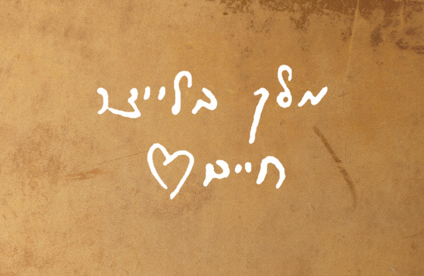
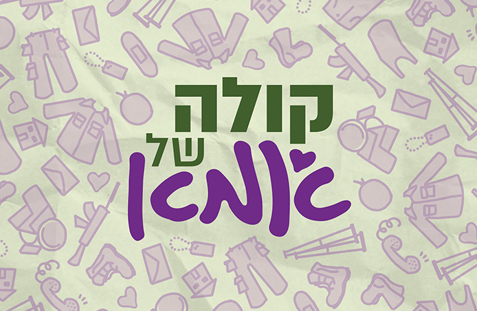
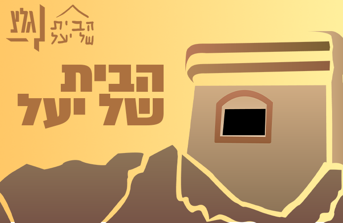
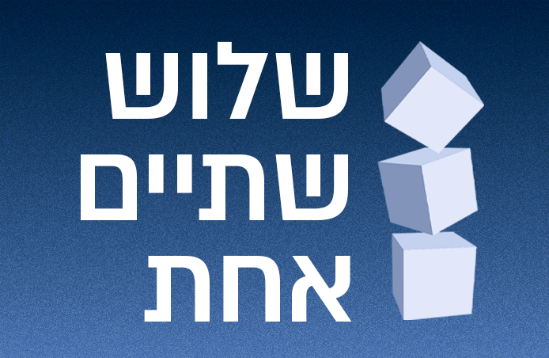
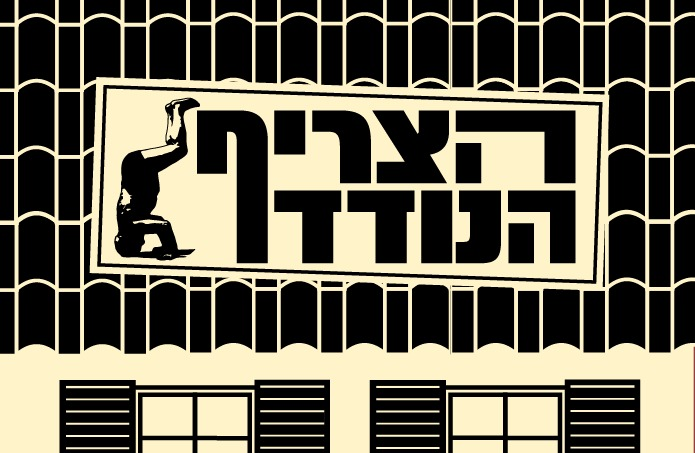
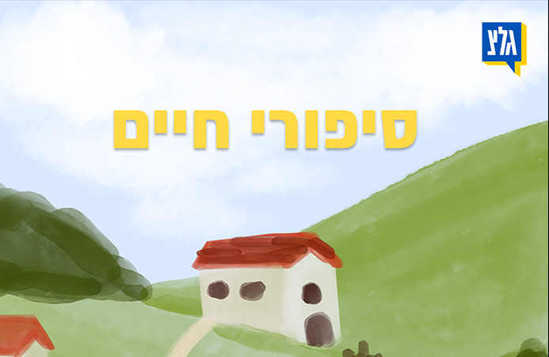
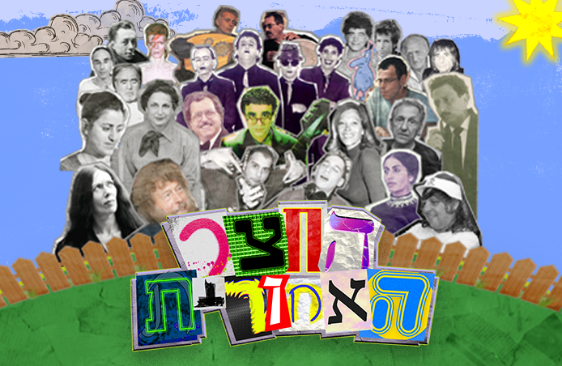
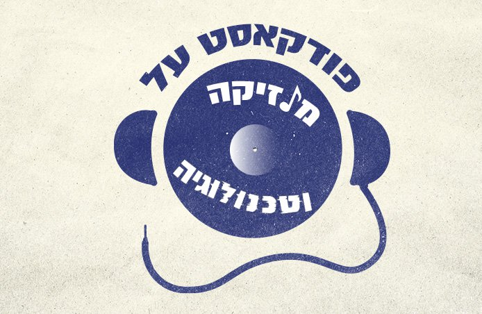

מוזיקה
הסכתים
סדרות רשת
תרבות ופנאי
ילדים ונוער
ארכיון
מוזיקה
הסכתים
סדרות רשת
תרבות ופנאי
ילדים ונוער
ארכיון
הסכתים אחרונים ששודרו
הסכתי גל"צ
אי אמון
עוד זה מדבר וזה בא1

מלך בלייצר חיים

קולה של אמא - ההסכת

הבית של יעל

שלוש שתיים אחת

הצריף הנודד
סיליקון ואדי: המדריך לאקוסיסטם הישראלי
StandUp4Israel

סיפורי חיים
דור הביט

החצר האחורית
הסכת ארצישראלי מצוי
אלטלנה - שתי נקודות מבט

פודקאסט על מוזיקה וטכנולוגיה
אנושי, אנושי מדי
מנוונים חסרי כבוד
פודכספי
מה שקורה מחר
וקבצנו יחד
1
2